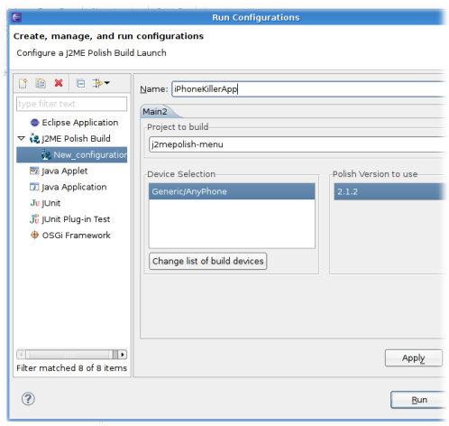

<%define inDocumentationSection %>
<%define inDocumentationSection.install %>
<%define inDocumentationSection.mepose %>
<%set title = J2ME Polish: Mepose %>
<%set basedir = ../ %>
<%include start.txt %>
				

	<h1 id="top">Mepose Features</h1>
	<%index %>

	<!-- This feature is not present in version 1.0.18.	
	<h2 id="createproject">Create a blank J2ME Polish project</h2>
	<table>
	   <tr>
	       <td valign="top">Create a J2ME Polish project with a Project Wizard. It will guide you through the creation and will setup all required files.</td>
	       <td></td>
	   </tr>
	</table>
    -->	
	
    <h2 id="rundanddebug">Run and Debug Your Application</h2>
    <div class="screenshots">
        <div class="screenshot">
            <div class="screenshot_description">
                Run or debug your application with normal Launch Configurations from within eclipse. Define target devices and the appropriate emulators will be started.
            </div>
            <div class="screenshot_image">
                
            </div>
        </div>
    </div>
<%include end.txt %>